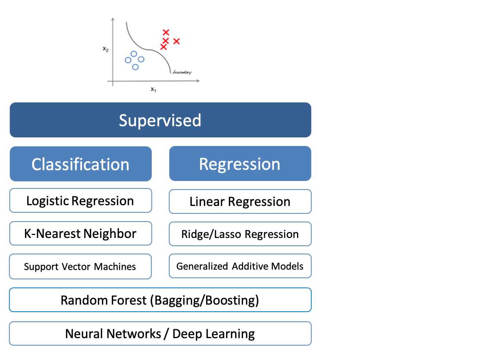
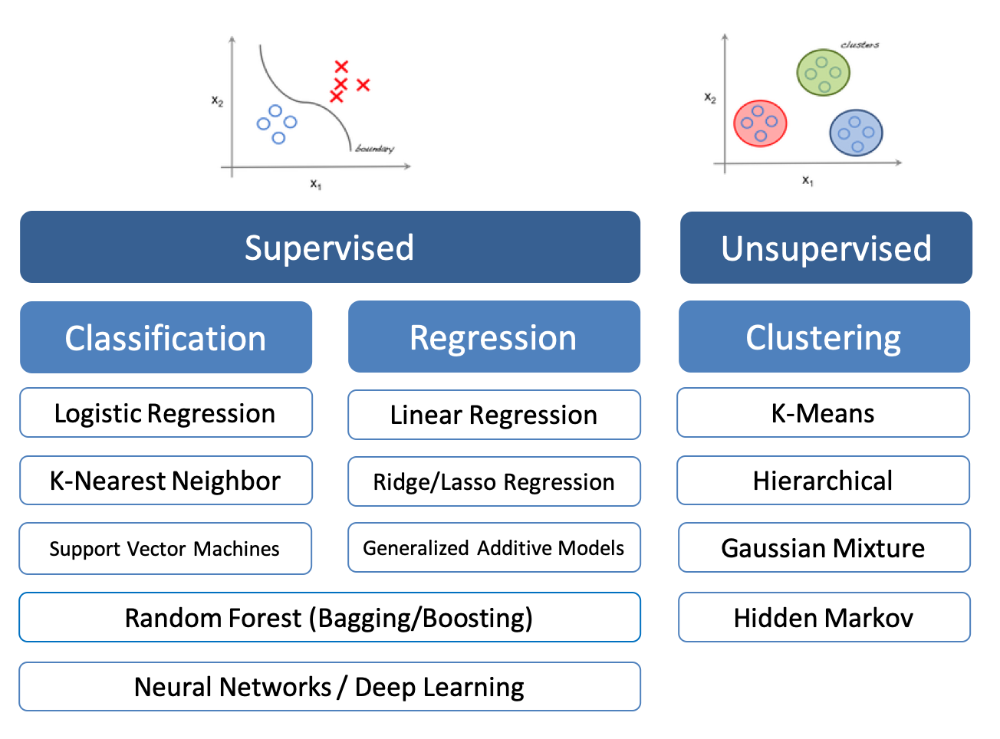
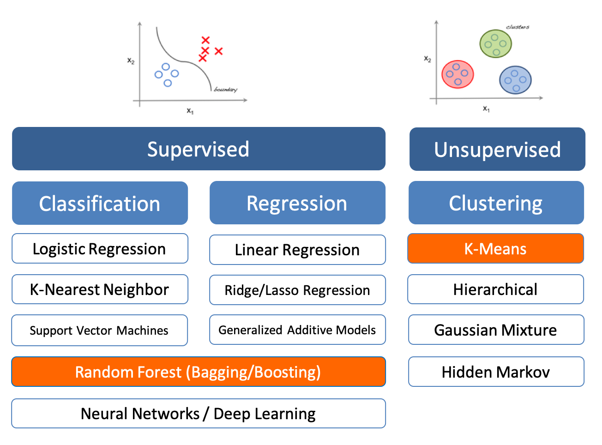

Urban Big Data Analytics
Class 11
Machine Learning and
Future of Urban Science
August 2, 2018
Instructor: Andy Hong, PhD
Postdoctoral Research and Teaching Fellow
School of Population and Public Health
University of British Columbia
Today's Schedule
| Time |
Event Description |
|
9:00am - 12:00pm
|
Last lecture and summary
|
|
1:30am - 4:00pm
|
Group project presentation
|
|
4:00pm - 5:00pm
|
Special mixer (Room 150)
|
What is machine learning?
- All useful programs "learn something"
- Linear regression is one form of learning
- Program that can learn from experience
"Field of study that gives computers the ability to learn without being explicitly programmed."
- Arthur Samuel 1959
Machine learning is . . .
Machine Learning Steps
Adapted from Google Cloud
Types of Learning



k-Means clustering
- Basic machine learning method
- A type of unsupervised learning
- Assign data points to a cluster with the nearest mean
k-Means steps
- Assign each data point to a cluster whose centroid it is nearest to
- Adjust the locations of the clusters' centroids
- Reassign all the points to the centroid
- Repeat all the steps until no changes can be made
K-Means Demo (1/4)
#Load packages
#install.packages("factoextra")
library(factoextra)
library(ggplot2)
library(magrittr)
library(dplyr)
K-Means Demo (2/4)
#Load data
data("USArrests")
head(USArrests)
#Scale the data
df = scale(USArrests)
K-Means Demo (3/4)
#Compute K-means cluster
result = kmeans(df, 4)
#See cluster
result$cluster
K-Means Demo (4/4)
# Visualize cluster
fviz_cluster(result, data = df)
Future of urban data science
Challenges of Smart Cities
- Privacy issues
- Biases in algorisms and automated systems
- Competition between humans and robots
- Equity vs. efficiency